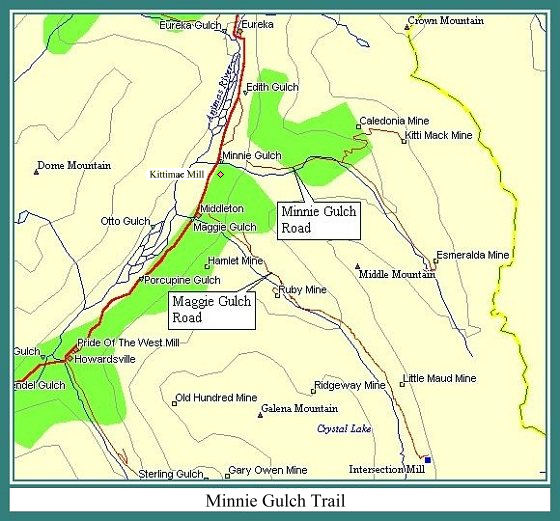
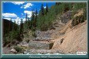
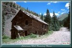
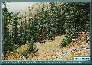
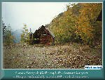
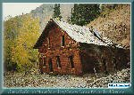
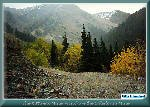

Contributed by Miles Lumbard
Photographs by Miles Lumbard & Jerry Clark

| The Minnie Gulch trail takes off from the east side of County Road 110, just south of Eureka. You'll need a real 4x4 for this one. It's another up and back trip, but the side gulches seem to be less crowded than the passes, and there's more to see too. The Minnie Gulch trail has two forks. One leads to the Caledonia Mine and Kittimac Mine, and the other to the Esmerelda Mine. |
| Before you start on the trail, you oughta go pokin' around in the trees, just south of Minnie Creek. Here you'll find the remains of the Kittimac Mill. It's a ruin now, but interestin' to look at. I'm sure I've got a picture of it, but danged if I can find it. |
| Once you start up the trail you'll be in the trees for a ways. When you come out into the open, you'll be high above Minnie Creek. After you cross the creek, you'll see large concrete foundations across the creek on your left, and just beyond that a large wooden building. These are the remains of the ore mill and mill boardinghouse of the Caledonia Mine. The mill was built around the turn of the century. The boardinghose is very well preserved, owing to it's sturdy construction, and off the beaten track location. Please help it to remain standing by not pokin' around inside. |
| Shortly after you pass the boardinghouse, the road forks. To the left is the trail up to the Caledonia and Kittimac mine sites. To the left is the trail to the Esmerelda Mine. Takin' the left fork, you'll be seein' lots of old tram towers as you make your way up the gulch. Most of these were part of the Kittimac tramway. The first buildings you encounter are the remains of the Caledonia Mine. The Caledonia and the Kittimac both worked a claim made in 1872 by Dr. James Beaton of New York. The mines were established around the turn of the century. The large building was the mine boardinghouse, while the small building was the livery stable. |
| If you continue on up the trail beyond here, be aware that it get's real steep, real narrow, and there ain't much room at the end. We had two Wranglers when we went up there, and we had a REAL interestin' time getting' 'em turned around. The remains at the end of the trail are what's left of the Kittimac Mine and it's tram terminal. The large collapsed structure just to the right of, and below the mine, may have been a boardinghouse. |
| Back at the fork, if you take the right fork, you'll pass a private cabin and outbuildings, and a ways beyond that you'll find a waterfall on your left, where a side stream runs into Minnie Creek. On beyond that are the remains of the Esmerelda Mine. |
|
 |
The Caledonia Mill foundations
(125k) |

|
 |
The Caledonia Mill
boarding house (122k) |

|
 |
Cable still hangs on this tower
from the Kittimac tramway (140k) |

|
 |
A snow flurry drifts down the
Animas Cayon, setting a melancholy mood at the Caledonia Mine (137k) |

|
 |
The Caledonia Mine boarding house
leans towards oblivion (148k) |

|
 |
The Kittimac Mine as seen
from the Caledonia Mine (125k) |


|
The Narrow Gauge Circle is written, maintained,and hosted by: Mark L. Evans Send Comments to:Mark L. Evans All original materials, text, and digital images Copyright © 1996-2017 Mark L. Evans. All rights reserved. Imitation is said to be the "sincerest" form of flattery.....Please don't flatter us without permission. |